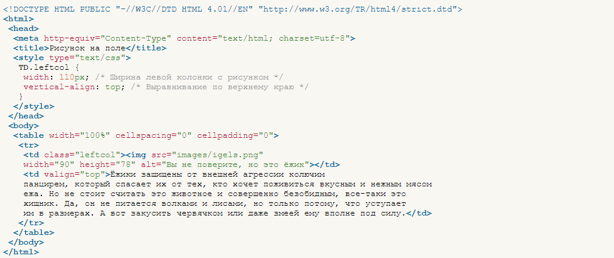
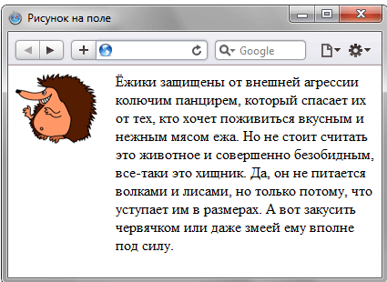

Обтекание картинки текстом — один из популярных приемов верстки веб-страниц, когда изображение располагается по краю окна браузера, а текст обходит его с других сторон. Для создания обтекания изображения текстом существует несколько способов, связанных, как с возможностью тегов HTML, так и с применением стилей.
Так, у тега (img) есть атрибут align, который определяет выравнивание изображения. Этот атрибут задает, возле какого края окна будет располагаться рисунок, одновременно устанавливая и способ обтекания текста. Чтобы выровнять изображение по правому краю и задать обтекание слева, используют значение right, для выравнивания по левому краю применяют left. Атрибут align часто используют в связке с другими атрибутами тега (img) — vspace и hspace. Они определяют расстояние от обтекаемого текста до изображения. Без этих атрибутов изображение и текст будут слишком плотно прилегать друг к другу (пример 2).
Пример:
Отображение в браузере:
